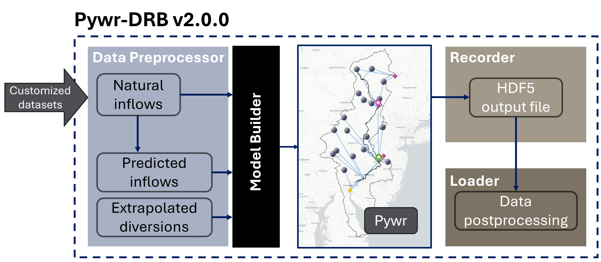

Pywr-DRB Release Notes#
v2.2.0 (2026-07-28)#
Overview#
Pywr-DRB v2.2.0 adds a new perfect_foresight flow prediction mode, a new STARFITOfflineSimulator class which simulates STARFIT reservoir releases outside of the Pywr-DRB simulation, and the ability to run the model with custom STARFIT parameters. The pre-packaged observed flow and storage records have been extended through July 2026, with an improved NYC reservoir storage record. This release also contains bug fixes for ensemble simulations run using MPI.
New Functionality#
1. New flow_prediction_mode option in ModelBuilder#
The FFMP-based release rules for the NYC and lower basin reservoirs rely on multi-day predictions of flows at Montague and Trenton. In prior versions, these predictions were always generated using a regression-based disaggregation method. This remains the default behavior.
The new flow_prediction_mode option in the ModelBuilder options allows the user to choose between prediction methods:
"regression_disagg"(default): Regression-based flow predictions, identical to prior versions."perfect_foresight": Predictions constructed such that the model has perfect knowledge of future non-NYC flow contributions at Montague and Trenton. In this mode, NYC reservoirs contribute zero to the predicted flows (their releases are the quantity being determined by the FFMP logic), STARFIT-controlled reservoirs contribute pre-simulated STARFIT releases (seeSTARFITOfflineSimulatorbelow), and all other nodes contribute their consumption-adjusted catchment inflows.
The legacy internal “perfect foresight” method, which took predictions directly from the dataset gage flows without accounting for reservoir operations, has been removed.
import pywrdrb
mb = pywrdrb.ModelBuilder(
start_date="1983-10-01",
end_date="1985-12-31",
inflow_type="nhmv10_withObsScaled",
options={"flow_prediction_mode": "perfect_foresight"},
)
mb.make_model()
mb.write_model("./model_perfect_foresight.json")
1.1 Regenerated predicted_inflows_mgd.csv and predicted_diversions_mgd.csv#
The predicted_inflows_mgd.csv files for all nine pre-packaged datasets, and the predicted_diversions_mgd.csv file, have been re-generated and now contain both regression_disagg and perfect_foresight prediction columns. This allows users to run either prediction mode without re-running the preprocessors.
The regression_disagg predicted inflow values are unchanged relative to v2.1.0. The predicted diversions have been re-fit using the updated observed records (described below), so the regression-based diversion predictions differ from v2.1.0 and now extend through May 2025.
2. STARFITOfflineSimulator for offline reservoir simulation#
The new pywrdrb.pre.STARFITOfflineSimulator class replicates the STARFIT release logic used by the pywrdrb.parameters.STARFITReservoirRelease parameter, but runs outside of the Pywr simulation. Given a timeseries of catchment inflows, it simulates storage dynamics and releases day-by-day for each STARFIT-controlled reservoir.
This class is used to generate the pre-simulated releases required by the perfect_foresight prediction mode. It can also be used on its own to study STARFIT release behavior for a given inflow scenario, without needing to run the full Pywr-DRB model.
from pywrdrb.pre import STARFITOfflineSimulator
sim = STARFITOfflineSimulator(initial_volume_frac=0.8)
sim.load_parameters()
releases_df = sim.simulate_all(catchment_inflows_df)
3. Use custom STARFIT parameters#
In prior versions, the STARFIT reservoir rule parameters were always loaded from the istarf_conus.csv file included in the package. The new starfit_params_filename option in the ModelBuilder options allows the user to provide an alternative STARFIT parameter CSV. The file must follow the same format as istarf_conus.csv and contain rows for all Pywr-DRB reservoirs. The custom parameters are used for both the reservoir capacities and the STARFIT release rules.
mb = pywrdrb.ModelBuilder(
start_date="1983-10-01",
end_date="1985-12-31",
inflow_type="nhmv10_withObsScaled",
options={"starfit_params_filename": "./my_starfit_params.csv"},
)
Note that this option cannot be combined with the run_starfit_sensitivity_analysis option, which loads parameters from a separate scenario file.
4. Updated default STARFIT parameters for FE Walter, Beltzville, Blue Marsh, and Prompton#
The default STARFIT rule parameters for the four lower basin flood control reservoirs (fewalter, beltzvilleCombined, blueMarsh, prompton) have been updated in istarf_conus.csv. The new parameters were fit to the observed reservoir storage and release records (2004-2023): the normal operating range (NOR) bounds now follow the observed seasonal storage guide curves, and the seasonal release harmonics were fit by water balance so that simulated releases reproduce the observed seasonal storage cycle.
Compared to the prior defaults, the updated parameters substantially improve simulated storage and release accuracy at all four reservoirs. Notable changes:
Adjusted_MEANFLOW_MGDvalues are now set to the mean catchment inflows for each reservoir, correcting values which were previously off by up to a factor of three (e.g., FE Walter listed 137 MGD vs. an actual mean inflow near 400 MGD). This corrects the scaling of the inflow-response and storage-response terms in the release function.The Beltzville capacity (
Adjusted_CAP_MG) was raised from 13,500 MG to the storage-curve maximum of 17,750 MG. The prior value was below the observed normal pool volume (~14,000 MG), which made the observed storage level unreachable in simulation. The DRBC Water Code priority staging inlower_basin_ffmp.pyuses separate hard-coded usable-storage values and is unaffected.Prompton’s release bounds were updated using the Prompton release gauge (USGS 01429000): a 10 MGD minimum consistent with observed low releases, and a 2,000 MGD maximum which allows observed flood peaks to pass.
The DRBC-specified conservation releases and maximum discharges at FE Walter, Beltzville, and Blue Marsh are hard-coded in
lower_basin_ffmp.pyand are unchanged by the new parameters.
The prior default parameter values are retained in istarf_conus.csv under new row names (fewalter_v2.1_default, beltzvilleCombined_v2.1_default, blueMarsh_v2.1_default, prompton_v2.1_default) for reference. To run the model with the prior parameters, copy these rows into a custom parameter CSV (using the original row names) and pass it via the starfit_params_filename option.
The packaged perfect_foresight prediction files were re-generated using the updated default parameters, since the pre-simulated STARFIT releases embedded in those predictions are computed from the default parameter set.
The figure below compares observed storage dynamics against offline STARFIT simulations (driven by pub_nhmv10_BC_withObsScaled catchment inflows) using the v2.1 and v2.2 default parameters. Each panel shows the seasonal (day-of-year) median and interquartile range of storage as a fraction of the v2.2 capacity, over each reservoir’s observed storage record. Note the offline simulation represents pure STARFIT behavior only — the FFMP / Trenton-contribution logic that also influences Beltzville and Blue Marsh releases in the full model is not included.

4.1 Prompton release gauge added to observed data#
The Prompton release gauge (USGS 01429000, Lackawaxen River at Prompton) is now retrieved with the observational data and included as its own column (01429000) in gage_flow_mgd.csv. Prompton has no downstream gauge node in the model network, so this record is provided for observation comparisons such as evaluating simulated Prompton releases.
Updated Observed Data Records#
The pre-packaged observed data records (gage_flow_mgd.csv, catchment_inflow_mgd.csv, reservoir_storage_mg.csv) have been re-generated and now extend through 2026-07-20.
The NYC reservoir storage records (cannonsville, pepacton, neversink) have been improved:
DRBC daily storage records are now used for the period 1999-12-01 through 2021-11-30, replacing the storage values derived from USGS elevation records over that period. USGS-derived values are still used outside of the DRBC record period.
Early-record storage values known to be erroneous are now dropped on a per-reservoir basis, using reservoir-specific validity start dates.
The retrieval workflow (
pywrdrb.pre.ObservationalDataRetriever) now exports an audit CSV of the USGS-derived NYC storage record, and includes a storage diagnostics plotting function for visual inspection of the merged record.
New tests have been added in tests/test_observation_loader.py to verify the merged NYC storage record.
Bug Fixes#
1. Fixed scenario indexing in ensemble simulations#
Some parameters were indexing scenario data using the local scenario index rather than scenario_index.global_id. This produced incorrect scenario mappings when running ensemble simulations with MPI, where each rank only sees a subset of scenarios. The affected parameters, including STARFITReservoirRelease and the lower basin FFMP parameters, now use global_id throughout.
2. Fixed ensemble realization ID handling in preprocessors#
The ensemble preprocessors were inconsistent in their handling of integer vs. string realization IDs when reading ensemble HDF5 files, which caused failures for some ensemble datasets. Realization IDs are now consistently coerced to strings. The ensemble preprocessors also now accept an optional comm argument, allowing an existing MPI communicator to be reused.
3. STARFIT releases now enforce the minimum release in all storage conditions#
Previously, the STARFITReservoirRelease parameter only enforced the minimum release (R_min) when storage was below the normal operating range. When storage was inside the NOR, the release function could dip below R_min on very dry days. The minimum release is now enforced in all storage conditions, consistent with the DRBC conservation release requirements at the lower basin reservoirs.
The practical impact is small: in a 40-year test simulation, this affected roughly 0.27% of days at Blue Marsh (the most affected reservoir), with all other days unchanged. The same correction is applied in the STARFITOfflineSimulator.
v2.1.0#
Bug Fixes#
1. Fixed bug in PredictedInflowPreprocessor#
Starting in Pywr-DRB v2.0.0, we include the pywrdrb.pre.PredictedInflowPreprocessor() class. This is designed to flexibly support inflow prediction for any custom dataset.
This class contained a bug which was previously resulting in predicted flows being much less than the actual modeled flows at Trenton. As a result, the model was over-compensating and Blue Marsh and Beltzville reservoirs were releasing un-necessary water toward Trenton.
This bug has been fixed in the latest version.
1.1 Fixed predicted_inflows_mgd.csv for certain pre-packaged datasets#
Due to the bug described above, a few of the pre-packaged datasets which were new to version 2.0.0 included faulty input data for the predicted_inflow_mgd.csv.
This bug affected the following datasets:
pub_nhmv10_BC_withObsScaled(with package installation)All
wrf*datasets (with package installation)
The predicted_inflow_mgd.csv for each of these datasets has been re-generated using the revised PredictedInflowPreprocessor, and the correct values are now included in the package installation.
2. Fixed lower basin release accounting for Trenton flow target#
Lower basin reservoirs (beltzville, blue marsh, nockamixon) are used to help support the Trenton equivalent flow target with additional releases.
In prior versions of the model, these reservoirs were releasing excessive volumes to support Trenton flows, even when they were not necessary.
This was a bug located in the pywrdrb.parameters.ffmp.TotalReleaseNeededForDownstreamMRF parameter which was not considering prior lower basin releases when determining the remaining contribution requirements. This new version improves the accounting and helps avoid unnecessary releases.
Improved Trenton Equivalent Flow Calculation#
This new version includes a more accurate representation of the “Trenton Equivalent Flow”.
“The Trenton Equivalent Flow is computed as the sum of flows at the USGS Trenton gaging station, releases in excess of conservation releases from Blue Marsh Reservoir, and an amount of water, determined by the Delaware River Basin Commission (DRBC), to account for bypass flows via Yardley and the Point Pleasant Pumping Station.” (2017 FFMP Section 2.b)
In prior versions of the model, the Trenton Equivalent Flow was calculated as: Total flow at Trenton gauge + Blue Marsh reservoir releases beyond the normal, STARFIT-based releases.
In the revised model, the Trenton Equivalent Flow is calculated as: Total flow at Trenton gauge + Blue Marsh releases above the conservation release value (50 cfs)
Updated ML temperature and salinity modeling capabilities#
Improved API and functionality for the LSTM temperature and salinity models.
A new tutorial notebook will be available soon.
New Functionality#
Use custom diversion data#
In prior versions of the model, there was only a single historical diversion dataset available. This restricted simulation to the historic period, since future diversions were not available. Additionally, the user could not use any alternative diversion other than the single historic data.
In the new version, we allow for custom diversions when running custom inflow scenarios.
The custom diversions can either be manually generated or generated using the preprocessor described below.
ExtrapolatedDiversionPreprocessor to generate for custom diversion data#
A new tutorial notebook demonstrating this functionality will be available soon.
In the ModelBuilder options, there is a new option nyc_nj_demand_data which can take values [‘historic’, ‘custom’, ‘constant’]. When
PredictedDiversionEnsemblePreprocessor to support custom inflow ensemble simulation#
The PredictedDiversionPreprocessor is needed when running custom inflow scenarios. However, prior versions only supporting single-scenario datasets. This prevented the use of custom inflow ensemble data from being used.
The new PredictedDiversionEnsemblePreprocessor allows for ensembles of custom inflow to be run using Pywr-DRB.
v2.0.1#
Overview#
Pywr-DRB v2.0.1 adds package dependency versions to avoid installation issues, and contains minor bug fixes with the pywrdrb.Data() class functionality.
Package Dependencies#
Recent updates to the pywr and scipy packages cause issues during installation.
We have updated the pywrdrb dependency list to include:
"pywr==1.27.4""scipy==1.15.3"
We specify versions across the dependency list, however the only necessary version requirements at the moment are for the two packages above.
Minor Bug Fixes and Updates#
pywrdrb.Data() Updates#
Modified the
AbstractDataLoaderclass to support ensemble flow files in `AbstractDataLoader.get_base_results()Previously, this only supported loading data from
gage_flow_mgd.csvfilesNow, it supports ensemble files (
gage_flow_mgd.hdf5) for a list ofrealization_ids
Moved the
flowtye_optslist creation into the__init__()of theHydrologicModelFlow()class. This is necessary to allow for custom inflow types to be recognized as a valid flowtype option when using:pywrdrb.Data().load_hydrologic_model_flow()User’s are still required to register the custom flowtype using the
pathnavigatoras demonstrated in Tutorial 04 - Using Customized Data to Run Pywr-DRB
Added
"all"to thehydrologic_model_results_set_optsThis allows uses to load flows from all nodes (instead of just major_nodes) when running
pywrdrb.Data().load_hydrologic_model_flow()
Modified the
pywrdrb.Data().export()andpywrdrb.Data().load_from_export()to support custom data.Previously, these functions only allowed for export/load of existing
results_setoptions.Now, users can add new/custom data to the
pywrdrb.Dataobject, then export and re-load that data later.See the example
Example: Modifying, exporting and re-loading data objects#
Below is an example of how custom/new data can be added to the pywrdrb.Data class, and how the full data class can be exported to a new file and later reloaded.
First, load the Pywr-DRB output using the existing pywrdrb.Data functionality. See Tutorial 03 - Loading and Interpreting Output for more detail on this existing functionality.
## Existing functionality
import pywrdrb
data = pywrdrb.Data()
data.load_output(
results_sets=['major_flow'],
output_filenames=['./pywrdrb_output.hdf5']
)
df_flow = data.major_flow["pywrdrb_output"][0]
We can calculate new data using the loaded output data. In this example below, I’ll do a simple 7-day mean flow calculation.
Then, we can store the newly calculated rolling_mean_major_flow inside the data object. Importantly, this addition must match the hierarchical data dictionary formatting.
After the data is stored in the data object, we can use the export() function.
The export function will save all attributes/contents of the data object to an HDF5 file with the given name.
## New functionality
# Calculate new metrics based on the original output data
df_flow_rolling = df_flow.rolling(window=7).mean()
# Store the new df in the data object
# Important: Format of dictionaries must match
data.rolling_mean_major_flow = {}
data.rolling_mean_major_flow["pywrdrb_output"] = {}
data.rolling_mean_major_flow["pywrdrb_output"][0] = df_flow_rolling
# Save the full data object as an export
# This will include all metrics, including the added rolling mean flow
data.export("./pywrdrb_output_with_postprocessing.hdf5")
Then, later we can re-load the modified data object using:
data = pywrdrb.Data()
data.load_from_export("./pywrdrb_output_with_postprocessing.hdf5")
Example: Loading custom hydrologic data using pywrdrb.Data()#
The load_hydrologic_model_flow() function is designed to load <flowtype>/gage_flow_mgd.csv files. Thus, the resulting data is reflective of the full natural flow as modeled by the model/dataset being loaded. This flow is not routed through Pywr-DRB.
Previously, this funciton was unable to be used for custom flowtypes arguments, and was only able to load the datasets that came pre-packaged with pywrdrb installation.
The 2.0.1 patch fixes this, as shown below.
Importantly, this assumes that the custom data csv file has the same formatting as the existing pywrdrb datasets (node names as column names and datetime index) which is generally a pre-requisit for using custom data in the pywrdrb modeling workflow.
# Register custom dataset with pathnavigator
pn_config = pywrdrb.get_pn_config()
pn_config["flows/custom_data"] = "custom_data"
pywrdrb.load_pn_config(pn_config)
# List of result types to load
# these include all valid options given the input data
results_sets=['all', 'major_flow', 'reservoir_downstream_gage']
data = pywrdrb.Data()
# Previously, using flowtypes=['custom_data'] would give error
data.load_hydrologic_model_flow(flowtypes=["custom_data"],
results_sets=results_sets)
# The "all" results set is new, and returns gage_flow (full natural) at all nodes
data.all['custom_data'][0].head()
v2.0.0 (2025)#
Overview#
Pywr-DRB v2.0.0 includes a major re-structure and modularization of the Pywr-DRB v1.0.2 (Hamilton et al., 2024), which emphasizes on improving the user interfaces for flexibility and ease of use. This version also greatly improves runtime efficiency and model fidelity by adding water temperature prediction and salt front location prediction capabilities while maintaining much of the core reservoir, diversion, regulatory and management functionality as the prior versions.
Please cite the release as
Lin, C.Y., Amestoy, T., Smith, M., Hamilton, A., & Reed, P. (2025). Pywr‑DRB v2.0.0 [Software]. Zenodo. https://doi.org/10.5281/zenodo.15659955
Links and References#
Major Updates#
1. Modularization & Packaging#
Modularize the code and introduce new
pywrdrbAPI, relative to that used in Hamilton et al. (2024) seeks to:Improve standardization (e.g., file naming conventions, workflows, docstrings)
Add flexibility for running simulations with different scenarios, settings and options
Improve runtime efficiency
Improve code reliability (e.g., unit testing and more detailed package dependency specifications)
Introduce object-oriented interface:
# v2.0.0 approach - object-oriented interface mb = pywrdrb.ModelBuilder( inflow_type='nhmv10_withObsScaled', start_date="2020-01-01", end_date="2020-12-31" ) mb.make_model() mb.write_model("model.json") # Load model model = pywrdrb.Model.load("model.json") recorder = pywrdrb.OutputRecorder( model=model, output_filename=output_filename, parameters=[p for p in model.parameters if p.name] ) # Execute the simulation stats = model.run()
Adopts
pyproject.tomlto handle dependencies installation & package specifications that allows for simplepip install pywrdrbAll of the data is now stored in a standardized format within
Pywr-DRB/src/pywrdrb/data/
Key modules & classes#

DataPreprocessor classes:Create necessary model inputs from the raw datasets (e.g., hydrological data).
Retrieve latest observed data (e.g., gauge flows and reservoir storages).
This module enable sustainable and customizable use of the model to run with latest information and user-provided inputs.
pywrdrb.path_manager:Adopt
pathnavigatorfor better path management that enable linking external custom datasets to pywrdrb.
pywrdrb.ModelBuilder:Modularize the model building process for customizing simulation settings.
Write a model to JSON model file
pywrdrb.OutputRecorder:Enable subset output variables to reduce memory burden.
Improve runtime speed by avoiding frequent IO and utilizing internal memory.
This enable future large-scale experiments.
pywrdrb.Data:Convert internal variable names into user-friendly names.
Allow loading multiple output files
Enable loading subset of outputs to enhance loading speed.
This enable smooth comparison across simulation runs.
2. Improved policy representation with respect to Trenton flow target#
Pywr-DRB
v1.0.2error incorrectly required NYC reservoirs to maintain the Trenton Equivalent Flow Objective at all times, which is inaccurate relative to the actual basin policy, which only requires NYC to maintain the Montague Flow Objective.Pywr-DRB
v2.0.0correction: Implements the constrained Interim Excess Release Quantity (IERQ) Trenton flow bank as described by the Flexible Flow Management Program; NYC reservoirs have an annual allocation of 6.09 billion gallons for the Trenton Equivalent Flow Objective.NYC reservoirs are required to maintain only the Montague flow target, as specified by the 1954 US Supreme Court Decree.
IERQReleaseparameter (pywrdrb/parameters/banks.py) tracks bank usage and enforces constraints on NYC releases used for the Trenton Flow Objective. Bank resets each June 1st as specified in FFMP regulationsIn the latest version, we limit the annual NYC releases for Trenton to 6.02BG
3. Enabled water temperature & salt front location prediction capabilities#
Added custom parameters to couple LSTM models with
PywrDRB-MLplug-in to predict 1) daily maximum water temperature at Lordville and 2) 7-day averaged salt front location in river mile.The
PywrDRB-MLplug-in is currently private pending publication, but may be available upon request.
Designed LSTMs’ capability#
Model |
From |
To |
|---|---|---|
TempLSTM |
1/1/1979 |
12/31/2023 |
SalinityLSTM |
10/1/1963 |
12/31/2023 |
Temperature LSTM model#
The temperature model is developed based on Zwart et al. (2023). In order to fit to the control purpose, we construct TempLSTM1 to predict the Cannonsville downstream gauge temperature (T_C) and TempLSTM2 to predict the East Branch flow and the natural flow to Lordville (T_i).
The final water temperature at Lordville (T_L) is calculated by mapping the average temperature (Tavg) to the maximum temperature (T_L) using a random forest model.
Introduce API to allow user input thermal control policy
Salinity LSTM model#
The Salinity LSTM model is developed based on Gorski et al. (2024). We rebuild the model using the LSTM and BMI sturcture derived from Zwart et al. (2023) to predict 7-day averaged salt front location in river mile at each timestep.
Note that the salt front location has not yet be integrated into Montague and Trenton flow target operations. It is scheduled in the next release.
4. Expanded number of pre-packaged streamflow scenarios#
The original code used in Hamilton et al. (2024) only supported Pywr-DRB simulations using 4 hydrologic inflow datasets:
NHM version 1.0
NHM version 1.0 with scaled observational inflows at some reservoirs
NWM version 2.1
NWM version 2.1 with scaled observational inflows at some reservoirs
The latest version adds the following hydrologic inflow scenarios:
WRF-Hydro simulated flow during the AORC period
WRF-Hydro simulated flow during the AORC period with scaled observational inflows at some reservoirs
WRF-Hydro simulated flow during the 1960s drought
WRF-Hydro simulated flow during the 1960s drought, under a +2C climate scenario
All of these inflow scenarios come pre-packaged with the
pywrdrbsource code, and are ready for simulation. The table below summarizes the scenarios, lists their scenario keys and provides their simulation periods.
Scenario Key |
Description |
Simulation Period |
Source |
New to Pywr-DRB v2.0? |
|---|---|---|---|---|
|
National Hydrologic Model v1.0 |
1983-10-01 to 2016-12-31 |
Hay & LaFontain (2020) |
No |
|
NHM v1.0 with scaled observations |
1983-10-01 to 2016-12-31 |
Hamilton et al. (2024) |
No |
|
National Water Model v2.1 |
1983-10-01 to 2016-12-31 |
Blodgett (2022) |
No |
|
NWM v2.1 with scaled observations |
1983-10-01 to 2016-12-31 |
Hamilton et al. (2024) |
No |
|
WRF-Hydro AORC calibrated |
1979-10-01 to 2021-12-31 |
NCAR^ |
Yes |
|
WRF-Hydro AORC calibrated with scaled Observations |
1979-10-01 to 2021-12-31 |
NCAR^ |
Yes |
|
WRF-Hydro 1960s drought |
1959-10-01 to 1969-12-31 |
NCAR^ |
Yes |
|
WRF-Hydro +2°C climate scenario |
1959-10-01 to 1969-12-31* |
NCAR^ |
Yes |
|
Reconstructed streamflow (median) |
1945-01-01 to 2023-12-31 |
Amestoy & Reed (In Review) |
Yes |
^ National Center for Atmospheric Research. Publication unavailable.
* The
"wrf2050s_calib_nlcd2016"scenario is meant to represent the drought of record (1960s) during a +2C warming scenario (2050). In thepywrdrbcode, we adopt the 1959-1969 datetime index such that it is more easily compared to other simulation timeseries during the historic period.
5 Added support for customized datasets#
The new code is designed to support custom streamflow datasets provided by the user.
This is done using the
pywrdrb.premodule.Users must have a single CSV file with full natural flow estimates at all model nodes, and have them labeled using the node labels.
Then, we provide the
PredictedInflowPreprocessorto generate supporting input data required for the simulation.See advanced tutorials for the detailed custom dataset workflows.
References#
Hamilton, A. L., Amestoy, T. J., & Reed, P. M. (2024). Pywr-DRB: An open-source Python model for water availability and drought risk assessment in the Delaware River Basin. Environmental Modelling & Software, 181, 106185. https://doi.org/10.1016/j.envsoft.2024.106185
Amestoy, T. J. & Reed, P. M., (In Review) Integrated River Basin Assessment Framework Combining Probabilistic Streamflow Reconstruction, Bayesian Bias Correction, and Drought Storyline Analysis. Available at SSRN: https://ssrn.com/abstract=5240633 or http://dx.doi.org/10.2139/ssrn.5240633
Hay, L.E., and LaFontaine, J.H., 2020, Application of the National Hydrologic Model Infrastructure with the Precipitation-Runoff Modeling System (NHM-PRMS),1980-2016, Daymet Version 3 calibration: U.S. Geological Survey data release, https://doi.org/10.5066/P9PGZE0S.
Blodgett, D.L., 2022, National Water Model V2.1 retrospective for selected NWIS gage locations, (1979-2020): U.S. Geological Survey data release, https://doi.org/10.5066/P9K5BEJG.
Gorski, G., Cook, S., Snyder, A., Appling, A. P., Thompson, T., Smith, J. D., Warner, J. C., & Topp, S. N. (2024). Deep learning of estuary salinity dynamics is physically accurate at a fraction of hydrodynamic model computational cost. Limnology and Oceanography, 69(5), 1070–1085. https://doi.org/10.1002/lno.12549
Zwart, J. A., Oliver, S. K., Watkins, W. D., Sadler, J. M., Appling, A. P., Corson‐Dosch, H. R., … & Read, J. S. (2023). Near‐term forecasts of stream temperature using deep learning and data assimilation in support of management decisions. JAWRA Journal of the American Water Resources Association, 59(2), 317-337.
v2.0.0 - beta (2025-05-28)#
Overview#
Pywr-DRB v2.0.0 - beta is a pre-release version for a broader review before full v2.0.0 release.
Pywr-DRB v2.0.0 - beta includes a major re-structure and modularization of the Pywr-DRB v1.0.2 (Hamilton et al., 2024), which emphasizes on improving the user interfaces for flexibility and ease of use. This version also greatly improves runtime efficiency and model fidelity by adding water temperature prediction and salt front location prediction capabilities while maintaining much of the core reservoir, diversion, regulatory and management functionality as the prior versions.
Links and References#
Major Updates#
1. Modularization & Packaging#
Modularize the code and introduce new
pywrdrbAPI, relative to that used in Hamilton et al. (2024) seeks to:Improve standardization (e.g., file naming conventions, workflows, docstrings)
Add flexibility for running simulations with different scenarios, settings and options
Improve runtime efficiency
Improve code reliability (e.g., unit testing and more detailed package dependency specifications)
Introduce object-oriented interface:
# v2.0.0 approach - object-oriented interface mb = pywrdrb.ModelBuilder( inflow_type='nhmv10_withObsScaled', start_date="2020-01-01", end_date="2020-12-31" ) mb.make_model() mb.write_model("model.json") # Load model model = pywrdrb.Model.load("model.json") recorder = pywrdrb.OutputRecorder( model=model, output_filename=output_filename, parameters=[p for p in model.parameters if p.name] ) # Execute the simulation stats = model.run()
Adopts
pyproject.tomlto handle dependencies installation & package specifications that allows for simplepip install pywrdrbAll of the data is now stored in a standardized format within
Pywr-DRB/src/pywrdrb/data/
Key modules & classes#
DataPreprocessor classes:Create necessary model inputs from the raw datasets (e.g., hydrological data).
Retrieve latest observed data (e.g., gauge flows and reservoir storages).
This module enable sustainable and customizable use of the model to run with latest information and user-provided inputs.
pywrdrb.path_manager:Adopt
pathnavigatorfor better path management that enable linking external custom datasets to pywrdrb.
pywrdrb.ModelBuilder:Modularize the model building process for customizing simulation settings.
Write a model to JSON model file
pywrdrb.OutputRecorder:Enable subset output variables to reduce memory burden.
Improve runtime speed by avoiding frequent IO and utilizing internal memory.
This enable future large-scale experiments.
pywrdrb.Data:Convert internal variable names into user-friendly names.
Allow loading multiple output files
Enable loading subset of outputs to enhance loading speed.
This enable smooth comparison across simulation runs.
2. Improved policy representation with respect to Trenton flow target#
Pywr-DRB
v1.0.2error incorrectly required NYC reservoirs to maintain the Trenton Equivalent Flow Objective at all times, which is inaccurate relative to the actual basin policy, which only requires NYC to maintain the Montague Flow Objective.Pywr-DRB
v2.0.0correction: Implements the constrained Interim Excess Release Quantity (IERQ) Trenton flow bank as described by the Flexible Flow Management Program; NYC reservoirs have an annual allocation of 6.09 billion gallons for the Trenton Equivalent Flow Objective.NYC reservoirs are required to maintain only the Montague flow target, as specified by the 1954 US Supreme Court Decree.
IERQReleaseparameter (pywrdrb/parameters/banks.py) tracks bank usage and enforces constraints on NYC releases used for the Trenton Flow Objective. Bank resets each June 1st as specified in FFMP regulationsIn the latest version, we limit the annual NYC releases for Trenton to 6.02BG
3. Enabled water temperature & salt front location prediction capabilities#
Added custom parameters to couple LSTM models with
PywrDRB-MLplug-in to predict 1) daily maximum water temperature at Lordville and 2) 7-day averaged salt front location in river mile.The
PywrDRB-MLplug-in is currently private pending publication, but may be available upon request.
Designed LSTMs’ capability#
Model |
From |
To |
|---|---|---|
TempLSTM |
1/1/1979 |
12/31/2023 |
SalinityLSTM |
10/1/1963 |
12/31/2023 |
Temperature LSTM model#
The temperature model is developed based on Zwart et al. (2023). In order to fit to the control purpose, we construct TempLSTM1 to predict the Cannonsville downstream gauge temperature (T_C) and TempLSTM2 to predict the East Branch flow and the natural flow to Lordville (T_i).
The final water temperature at Lordville (T_L) is calculated by mapping the average temperature (Tavg) to the maximum temperature (T_L) using a random forest model.
Salinity LSTM model#
The Salinity LSTM model is developed based on Gorski et al. (2024). We rebuild the model using the LSTM and BMI sturcture derived from Zwart et al. (2023) to predict 7-day averaged salt front location in river mile at each timestep.
Note that the salt front location has not yet be integrated into Montague and Trenton flow target operations.
4. Expanded number of pre-packaged streamflow scenarios#
The original code used in Hamilton et al. (2024) only supported Pywr-DRB simulations using 4 hydrologic inflow datasets:
NHM version 1.0
NHM version 1.0 with scaled observational inflows at some reservoirs
NWM version 2.1
NWM version 2.1 with scaled observational inflows at some reservoirs
The latest version adds the following hydrologic inflow scenarios:
WRF-Hydro simulated flow during the AORC period
WRF-Hydro simulated flow during the AORC period with scaled observational inflows at some reservoirs
WRF-Hydro simulated flow during the 1960s drought
WRF-Hydro simulated flow during the 1960s drought, under a +2C climate scenario
All of these inflow scenarios come pre-packaged with the
pywrdrbsource code, and are ready for simulation. The table below summarizes the scenarios, lists their scenario keys and provides their simulation periods.
Scenario Key |
Description |
Simulation Period |
Source |
New to Pywr-DRB v2.0? |
|---|---|---|---|---|
|
National Hydrologic Model v1.0 |
1983-10-01 to 2016-12-31 |
Hay & LaFontain (2020) |
No |
|
NHM v1.0 with scaled observations |
1983-10-01 to 2016-12-31 |
Hamilton et al. (2024) |
No |
|
National Water Model v2.1 |
1983-10-01 to 2016-12-31 |
Blodgett (2022) |
No |
|
NWM v2.1 with scaled observations |
1983-10-01 to 2016-12-31 |
Hamilton et al. (2024) |
No |
|
WRF-Hydro AORC calibrated |
1979-10-01 to 2021-12-31 |
NCAR^ |
Yes |
|
WRF-Hydro AORC calibrated with scaled Observations |
1979-10-01 to 2021-12-31 |
NCAR^ |
Yes |
|
WRF-Hydro 1960s drought |
1959-10-01 to 1969-12-31 |
NCAR^ |
Yes |
|
WRF-Hydro +2°C climate scenario |
1959-10-01 to 1969-12-31* |
NCAR^ |
Yes |
|
Reconstructed streamflow (median) |
1945-01-01 to 2023-12-31 |
Amestoy & Reed (In Review) |
Yes |
^ National Center for Atmospheric Research. Publication unavailable.
* The
"wrf2050s_calib_nlcd2016"scenario is meant to represent the drought of record (1960s) during a +2C warming scenario (2050). In thepywrdrbcode, we adopt the 1959-1969 datetime index such that it is more easily compared to other simulation timeseries during the historic period.
5 Added support for customized datasets#
The new code is designed to support custom streamflow datasets provided by the user.
This is done using the
pywrdrb.premodule.Users must have a single CSV file with full natural flow estimates at all model nodes, and have them labeled using the node labels.
Then, we provide the
PredictedInflowPreprocessorto generate supporting input data required for the simulation.See advanced tutorials for the detailed custom dataset workflows.
References#
Hamilton, A. L., Amestoy, T. J., & Reed, P. M. (2024). Pywr-DRB: An open-source Python model for water availability and drought risk assessment in the Delaware River Basin. Environmental Modelling & Software, 181, 106185. https://doi.org/10.1016/j.envsoft.2024.106185
Amestoy, T. J. & Reed, P. M., (In Review) Integrated River Basin Assessment Framework Combining Probabilistic Streamflow Reconstruction, Bayesian Bias Correction, and Drought Storyline Analysis. Available at SSRN: https://ssrn.com/abstract=5240633 or http://dx.doi.org/10.2139/ssrn.5240633
Hay, L.E., and LaFontaine, J.H., 2020, Application of the National Hydrologic Model Infrastructure with the Precipitation-Runoff Modeling System (NHM-PRMS),1980-2016, Daymet Version 3 calibration: U.S. Geological Survey data release, https://doi.org/10.5066/P9PGZE0S.
Blodgett, D.L., 2022, National Water Model V2.1 retrospective for selected NWIS gage locations, (1979-2020): U.S. Geological Survey data release, https://doi.org/10.5066/P9K5BEJG.
Gorski, G., Cook, S., Snyder, A., Appling, A. P., Thompson, T., Smith, J. D., Warner, J. C., & Topp, S. N. (2024). Deep learning of estuary salinity dynamics is physically accurate at a fraction of hydrodynamic model computational cost. Limnology and Oceanography, 69(5), 1070–1085. https://doi.org/10.1002/lno.12549
Zwart, J. A., Oliver, S. K., Watkins, W. D., Sadler, J. M., Appling, A. P., Corson‐Dosch, H. R., … & Read, J. S. (2023). Near‐term forecasts of stream temperature using deep learning and data assimilation in support of management decisions. JAWRA Journal of the American Water Resources Association, 59(2), 317-337.
v1.0.2 (2024-8-04)#
Overview#
This release contains all code needed to create the analysis and figures in the following paper:
Hamilton, A.L., Amestoy, T.J., & P.M. Reed. (2024). Pywr-DRB: An open-source Python model for water availability and drought risk assessment in the Delaware River Basin. (In Review) Environmental Modeling and Software.